僕だけじゃなく、他の方も同じ方法で成果を出しています！

Kaoriさん
先生10人に英語習っても話せず
→ 英語で仕事するレベルまで復活
Lisa × Masa Special Seminar
脱・通じない英語｜
発音を身につけ、"話せる自分へ"
一つでも当てはまった皆さんは
間違いなく正しい場所に来ています
お願いしたい大事なこと
皆さんの「反応」が見えると私も
もっと熱く、深くお話しすることができます
（どうしても難しい場合はそのままでOKです！）
【超重要】
私が一方的に話す授業ではありません
皆さんと作るライブです
Lisa × Masa Special Seminar
もう歳だから
記憶力が悪いから
今まで何をやってもダメだったから
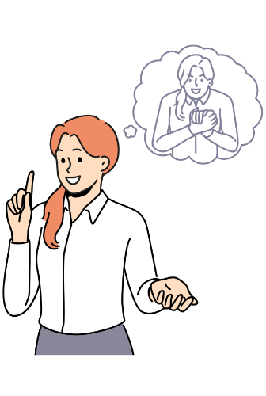
聞き取れない・話せないの原因が発音にあることを理解し、この場で聞こえた！を体験する
発音を知るだけで、今まで聞き取れなかった英語が聞こえるようになる
聞ける→話せるの回路をつなぎ、日本語を経由せず英語が口から出る感覚を掴む
何を・どの順番で・どれくらいやればいいか。最短ルートが全て分かる
セミナー参加特典のご案内
LIVE参加特典の受取方法
そのキーワードがないと受け取れませんので
絶対に最後まで集中して聞いてくださいね！
合同会社MasaEnglish 代表 / 東京外国語大学卒
現在ベトナムで英語を使って仕事をしている
オーストラリアに滞在
7都市全てで1週間以内に仕事を獲得
気がついたら、開始たった10秒で
通話ボタンを切って逃げ出していました
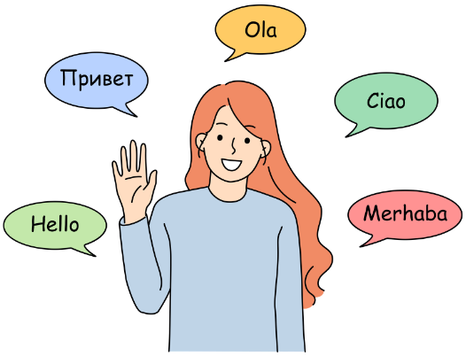
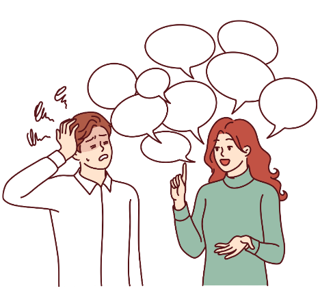
僕だけじゃなく、他の方も同じ方法で成果を出しています！
Kaoriさん
先生10人に英語習っても話せず
→ 英語で仕事するレベルまで復活
Ayakoさん
TOEICも英会話も伸び悩んでいた
→ TOEICも英会話も爆伸び
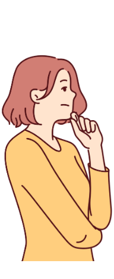
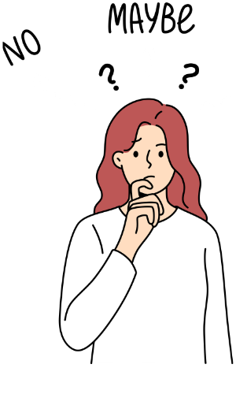
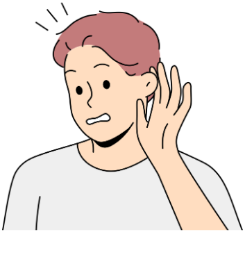
聞き取れない・話せないの原因が発音にあることを理解し、この場で聞こえた！を体験する
発音を知るだけで、今まで聞き取れなかった英語が聞こえるようになる
聞ける→話せるの回路をつなぎ、日本語を経由せず英語が口から出る感覚を掴む
何を・どの順番で・どれくらいやればいいか。最短ルートが全て分かる
教科書の英語
チェック・イット・アウト
ネイティブの英語
チェキラウ
教科書の英語
ワット・ドゥ・ユー・ウォント
ネイティブの英語
ワドュワナ?
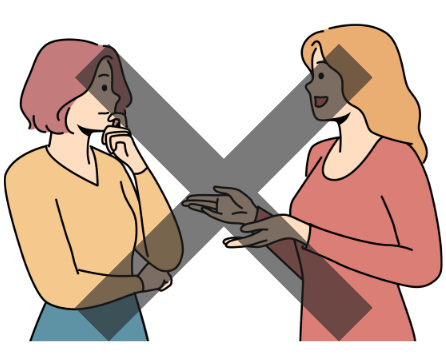
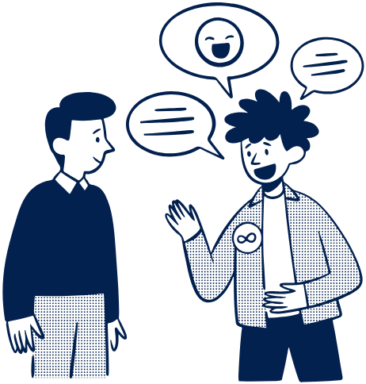
実際にうちの受講生も同じ変化を経験しています
Kaoriさん
Before: 10社もコーチングを受けて全部ダメだった
After: 英語で仕事するレベルまで復活
Ayakoさん
Before: TOEICも英会話も伸び悩んでいた
After: TOEICも英会話も爆伸び
聞き取れない・話せないの原因が発音にあることを理解し、この場で聞こえた！を体験する
発音を知るだけで、今まで聞き取れなかった英語が聞こえるようになる
聞ける→話せるの回路をつなぎ、日本語を経由せず英語が口から出る感覚を掴む
何を・どの順番で・どれくらいやればいいか。最短ルートが全て分かる
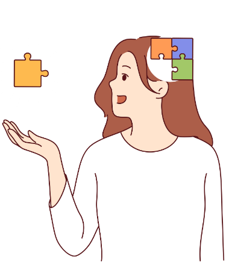
聞き取れない・話せないの原因が発音にあることを理解し、この場で聞こえた！を体験する
発音を知るだけで、今まで聞き取れなかった英語が聞こえるようになる
聞ける→話せるの回路をつなぎ、日本語を経由せず英語が口から出る感覚を掴む
何を・どの順番で・どれくらいやればいいか。最短ルートが全て分かる
Part2で発音を知るだけで
リスニングが変わることを体験しました。
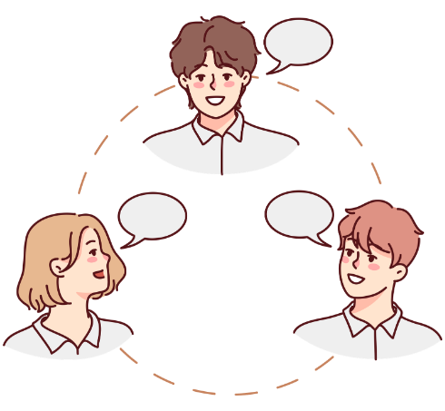
でも実際の会話は
0.1秒のキャッチボールです。
頭の中で組み立てている間に相手はもう次の話題に行っています。だから会話の途中でフリーズしてしまうんです。
つまり、発音が分かる。聞き取れる。
フレーズが頭に入る。
そのまま口から出る。

その感覚は皆さんにも必ず来ます
では最後に、Part1とPart2で
学んだ発音を使って
少し前までは発音できなかった。
でも今はフレーズが口から出てくる。
パッと聞き取れる発音のルールは増えた
知らないルールで話されたらまた止まる
使えるフレーズもあと1000個くらい必要
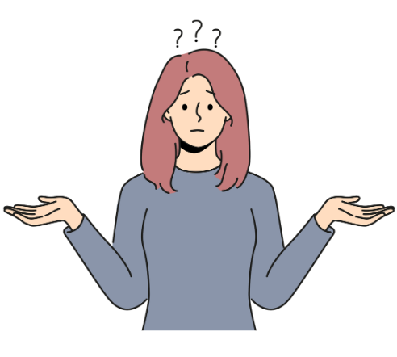
地図も持たずに自己流で砂漠を歩くようなもので、
結局また無駄な勉強を始めてしまいます
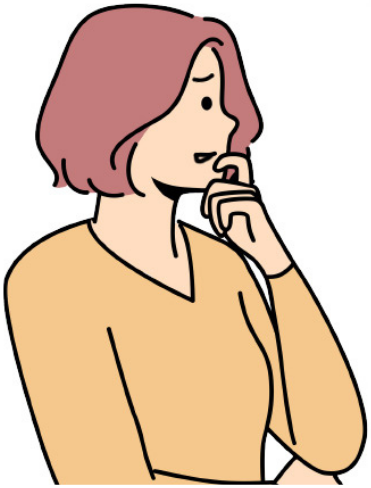
だからこそ、どうやって発音のルールと
フレーズを増やすかの
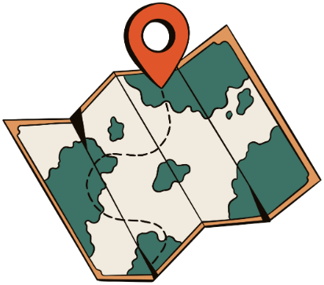
発音のルールを効率よく身につけ
フレーズを増やすための
全て公開します
最短ルート（Masa式5STEP）
失敗する人の多くは、順番を飛ばしてしまっています
3つのフェーズで進んでいく
【Phase 1】0〜2ヶ月目：知識獲得期
焦ってアウトプットはNG
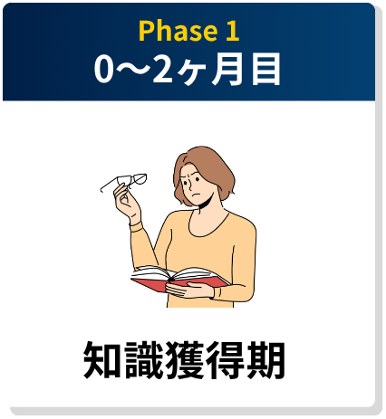
【Phase 2】3〜4ヶ月目
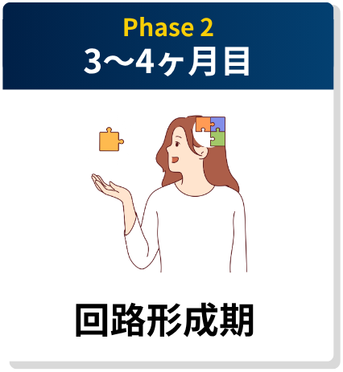
【Phase 3】5〜6ヶ月目
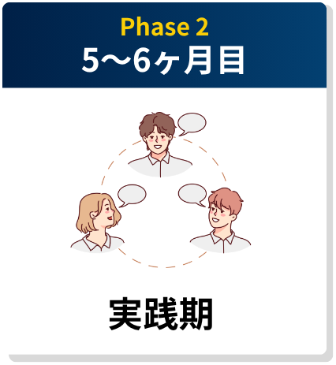
実際にうちの受講生も
とりぶちさん
Before: 英語が大の苦手
After: 外国人に英語で接客できるように
実際にうちの受講生も
Yukoさん
Before: 英語が通じずメンタル崩壊
After: 海外で仕事をオファーされる
実際に成果を出した受講生の実例もお見せしました
そう思った方、いますよね？
（挫折します）
実際、僕の受講生さんが
受講前に独学で勉強し
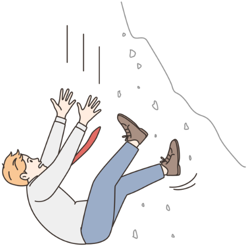
理由1：完璧主義の沼にハマってしまう
自分がどこまでいったら
次のフェーズに進めばいいかわからない。
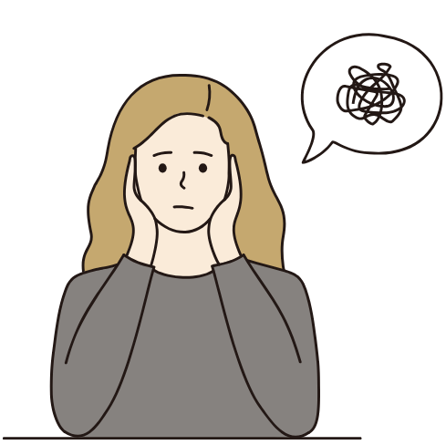
理由2：今日勉強する内容に迷う
よし！この手順で勉強しよう！と思っても...
からやることに困ってしまう
理由3：継続できない
人間の脳は1日後には74%忘れる
サボっても誰も引き上げてくれない
「今日は疲れたからいいや」
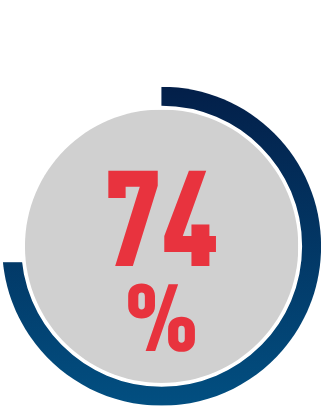
勉強会特別特典
を実施いたします！
まず一ヶ月目はこの学習内容
空いている時間はこの学習内容をする
この段階で次へと進む
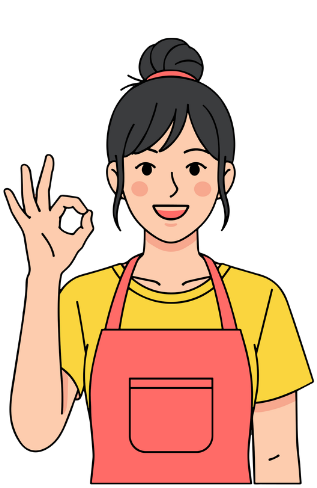
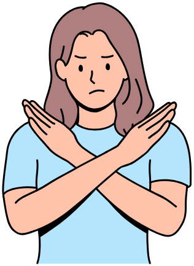
以下の方は参加をお断りします
来てください
プロのコーチがあなたに合ったプランを作成
私たちが提供できる時間には
どうしても物理的な限界があります
枠が埋まり次第、募集は即終了
二度とこのページは開きません
この1日を最後まで完走した
本気の上位数%の皆さんには
セミナー参加特典のご案内
質問がある方は
チャット欄に質問を送ってください
最後に
「英語できる人に代わって」と言われた私が
もしワーホリ前の自分に一言言えるとしたら
このセミナーであなたは
未来への希望が見えたはずです。
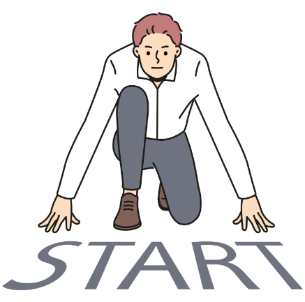
それでは個別相談でお会いしましょう！
あなたの挑戦を待っています！